### Why? I did own some Raspberry Pi boards in the past and I found them quite appealing. With the launch of the 4th generation and the rise of the whole Kubernetes ecosystem, I decided to give it a try and learn how to build a low-powered cluster using these boards. Also, Raspberry Pi 4 offers a version with 8 GB of RAM and VMWare launched a "test version" for ARM64 CPUs, therefore I had to try it.
### Hardware checklist + 2 x Raspberry Pi 2 v1.1 + 3 x Raspberry Pi 4 4GB + 1 x Raspberry Pi 4 8GB (for running VMWare ESXi Fling for ARM) + 1 x Anker PowerPort 60W Desktop USB power source (with 6 ports, each getting 2.4 Amps) + 2 x GeekPi Acrylic cluster cases for Raspberry Pi (needed two sets for building a larger stack) + 1 x Western Digital 250 GB SSD USB3.1 (used as a datastore for VMWare ESXi, on the Pi) + 1 x 8-port Netgear GS308E Gigabit managed switch + 2 x UK-to-EU power plug adapters + Cables
Assembly
I did this in two consecutive evenings, with children-induced chaos & stress. Just kidding, I just used a few small chunks of spare time to put it together. The GeekPi cluster case is built to house 4 boards. Since I wanted to have 7, I had to purchase two sets. No biggie, they’re quite cheap. Nothing much to say here, just playing around with minuscule screws and pins. The GeekPi comes with a lot of heatsinks and one fan for each of the devices you want to add to it.
With some extra care and no rush, I started with the "ground floor" and, once that was done, moved on to the next ones, mounting the provided fans for each Pi board:
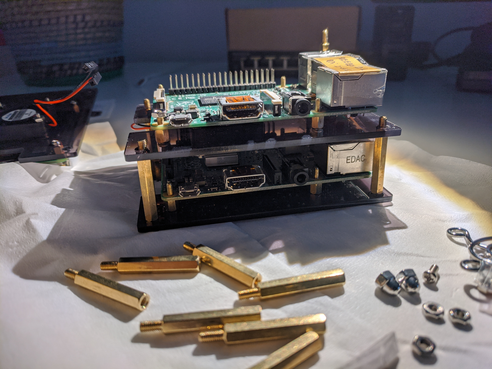
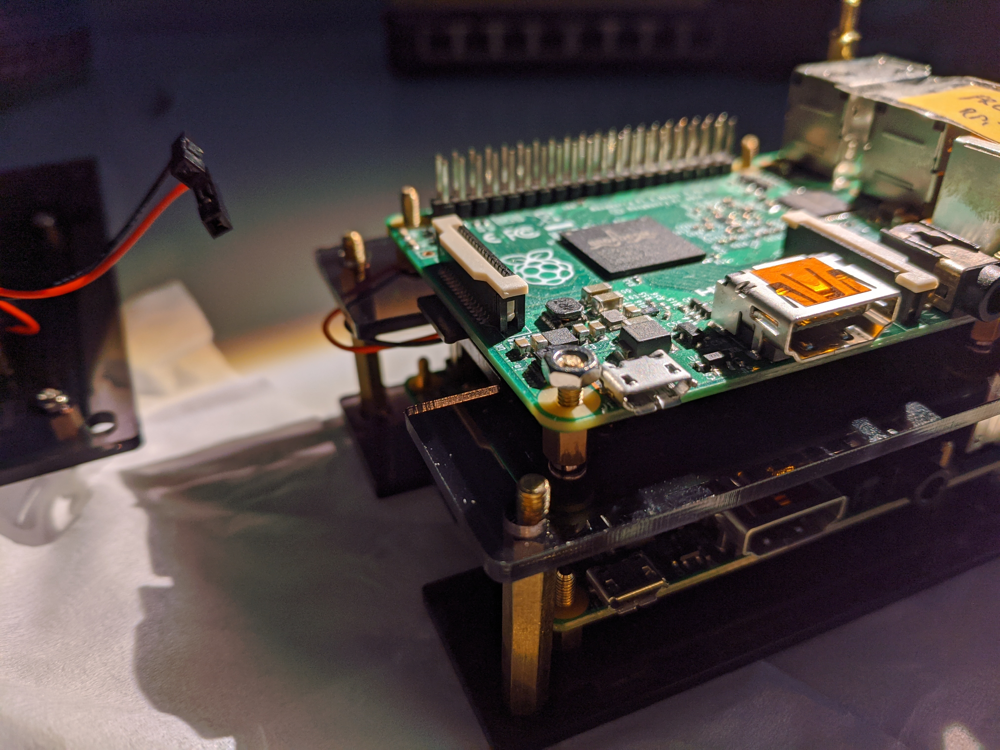
For the Pi 4s, I also added the heat sinks provided with the GeeekPi package:
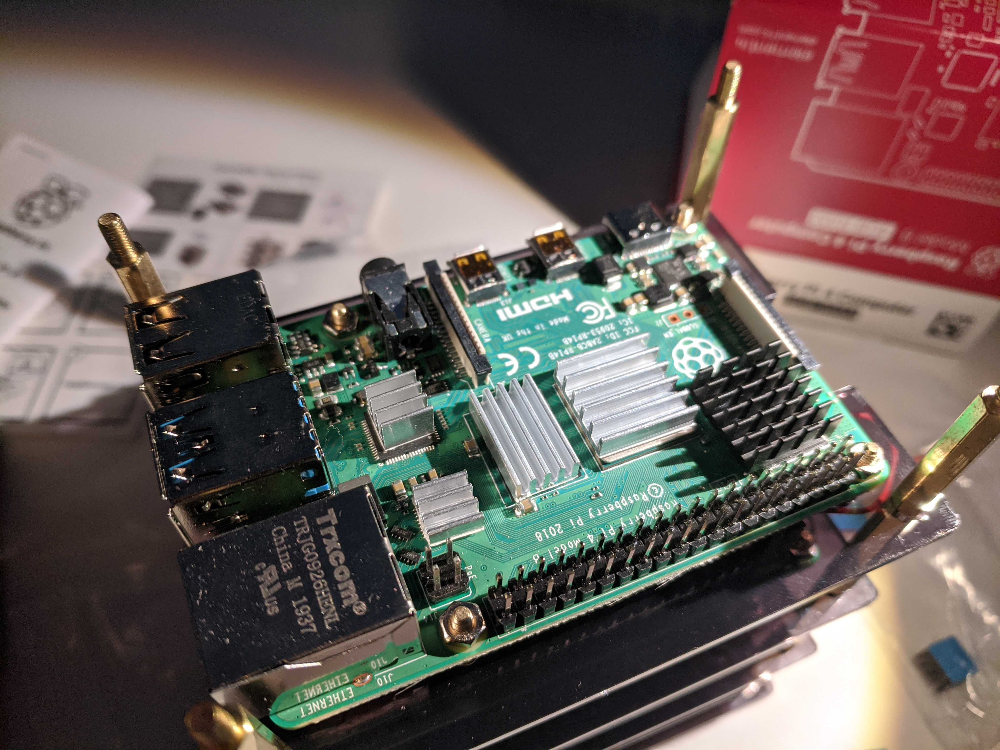
Finally, since I was about to place this right on the Netgear switch, I needed some pads that would make the whole cluster case stick to the switch and also prevent any unwanted physical contact between the switch case and RPi GPIO ports (or the board itself). I had something from an IKEA toolbox that matched the requirements and the metal spacers used for the cluster structure fit perfectly within those.
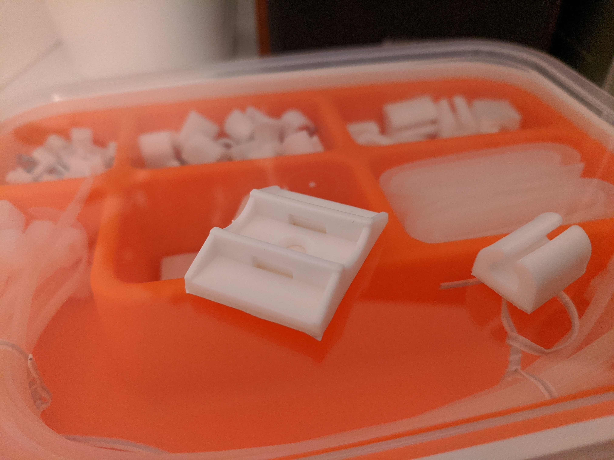
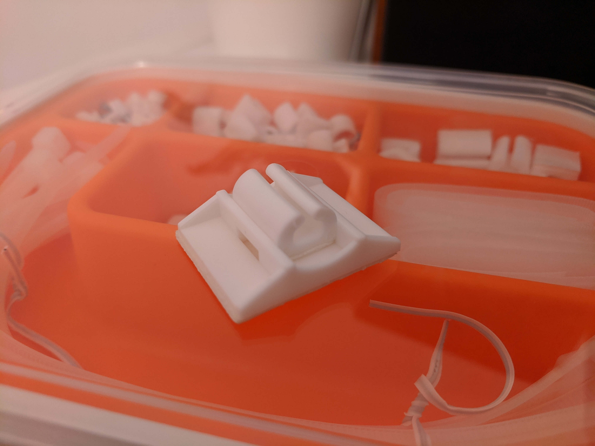
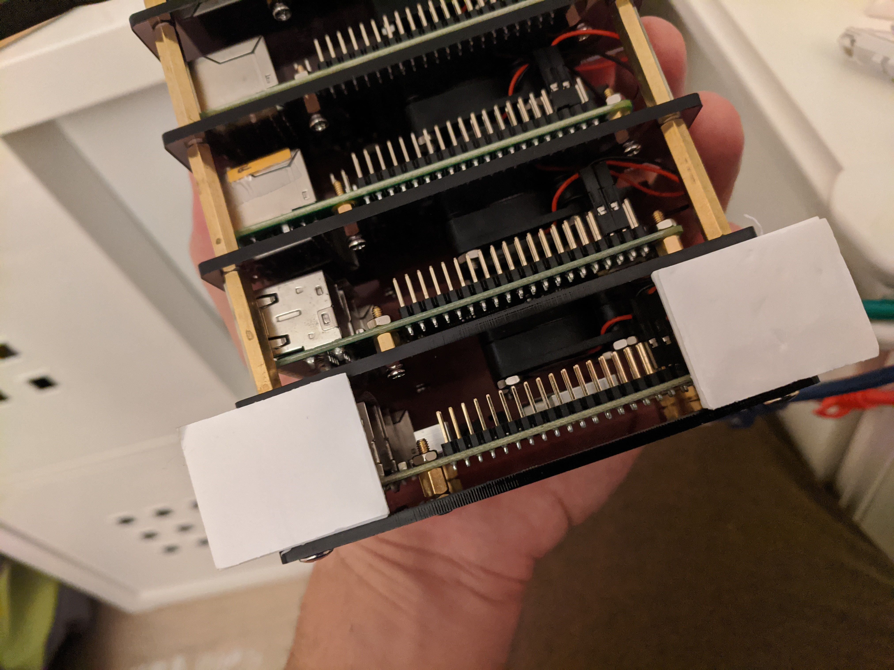
The external SSD will be attached to the Pi with 8 GB of RAM and it will serve as the main storage unit for both the hypervisor and VMFS. Not elegant, but I used zip-ties for that.
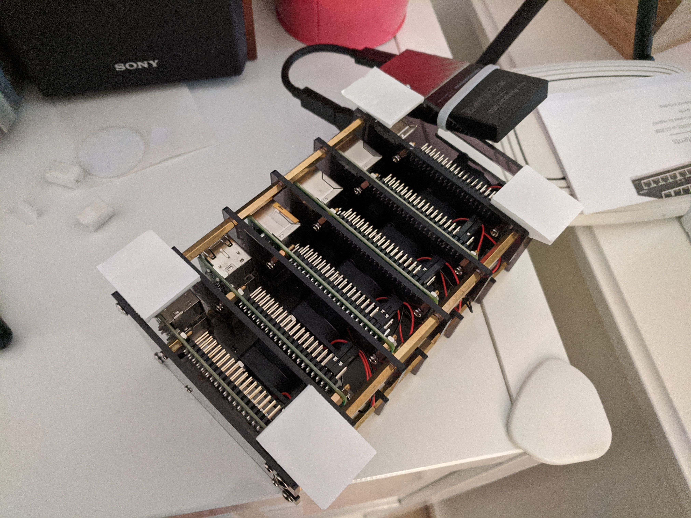
After sticking the cluster case in place on top of the Netgear switch, I added the network & USB cables that will go into the Anker USB power source:
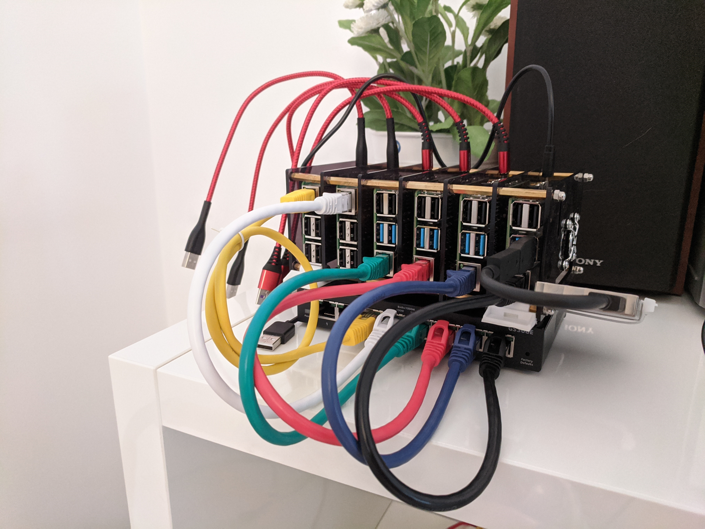
Putting it all together
Now, at the time of building this cluster, my homelab had a different configuration. I used some IKEA furniture and decided to put everything into a plastic drawer that had air vents in the front & back. That would host an Atrust thin client, the Netgear switch & the new Raspberry Pi cluster along with the Anker power supply and one good ol’ TP-Link WiFi router.
In order to keep things a bit spaced, I’ve used a “Variera” kitchen cupboard organizer. Naturally, all equipment has “rubber feet”. First, I positioned the USB power source, the thin client and the router, along with their cables. Then, managed to fit in the organizer and placed the Netgear switch and the RPi cluster on top of it (again, using some glued rubber pads just to keep things safe). The space suddently seemed cramped whenever I got my hands in there, but it worked.
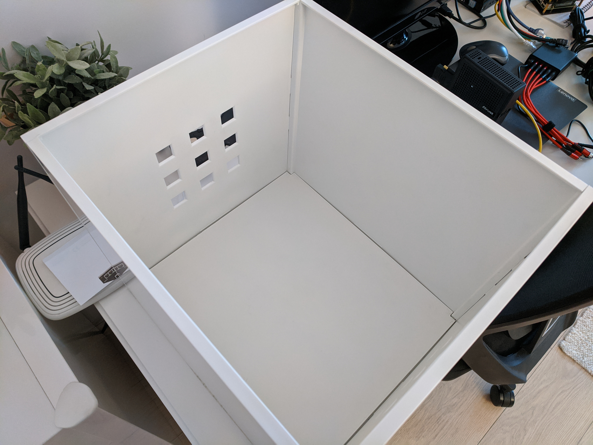
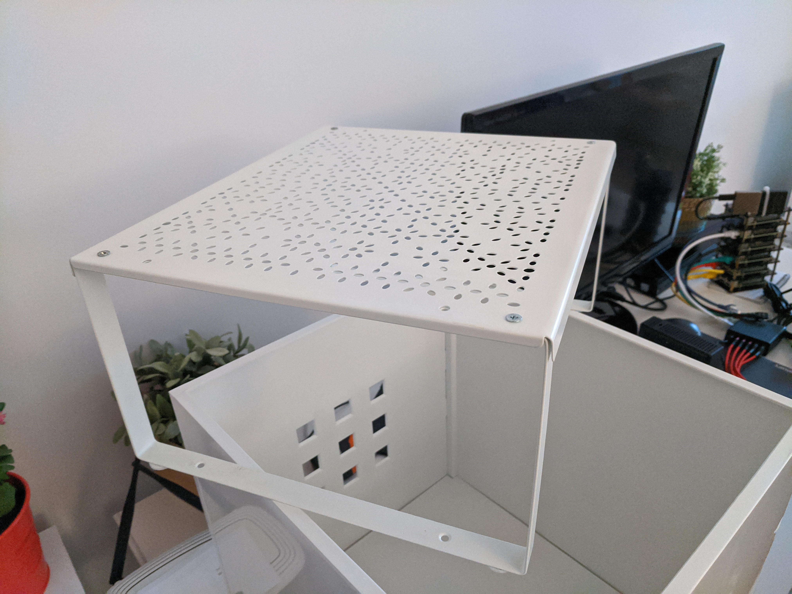
After tidying up the cable mess (a bit) and powering everything up, it worked like a charm. And it also looked quite nice. The thin client and the TP Link router had plenty of space beneath the cluster's "floor".
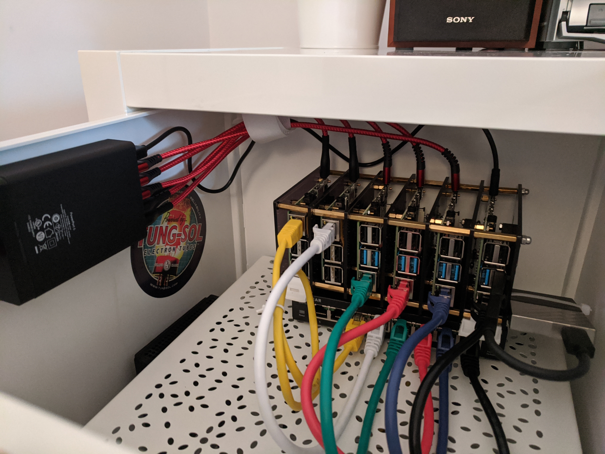
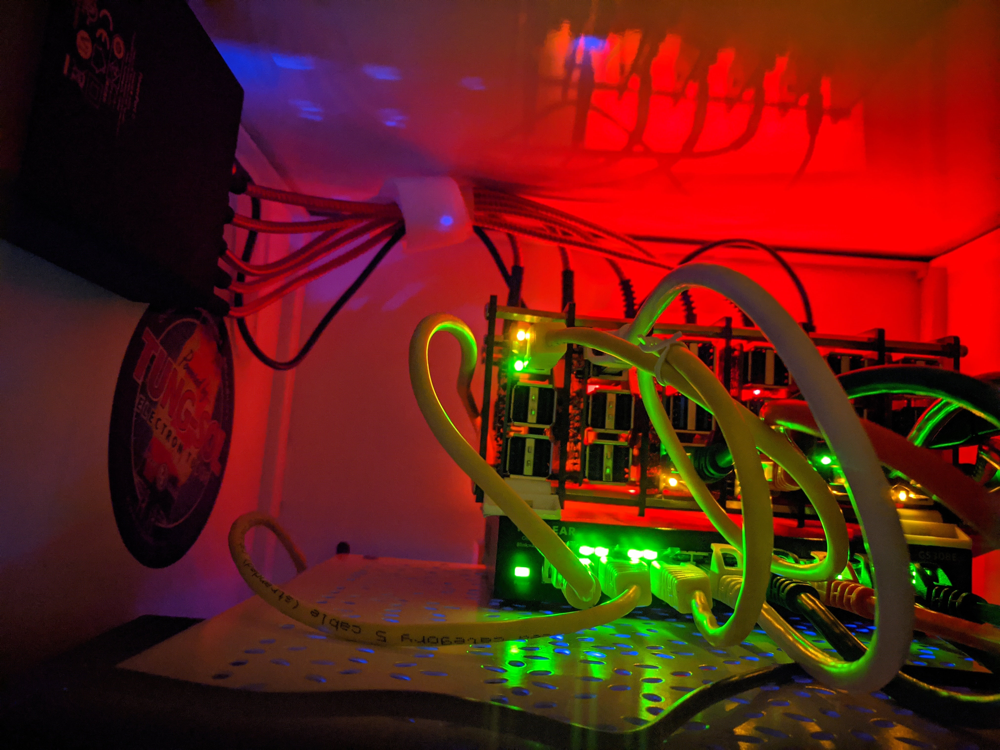
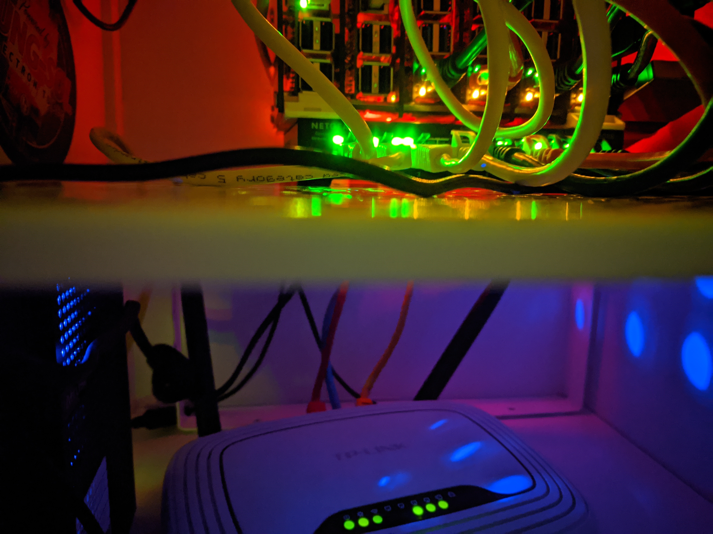
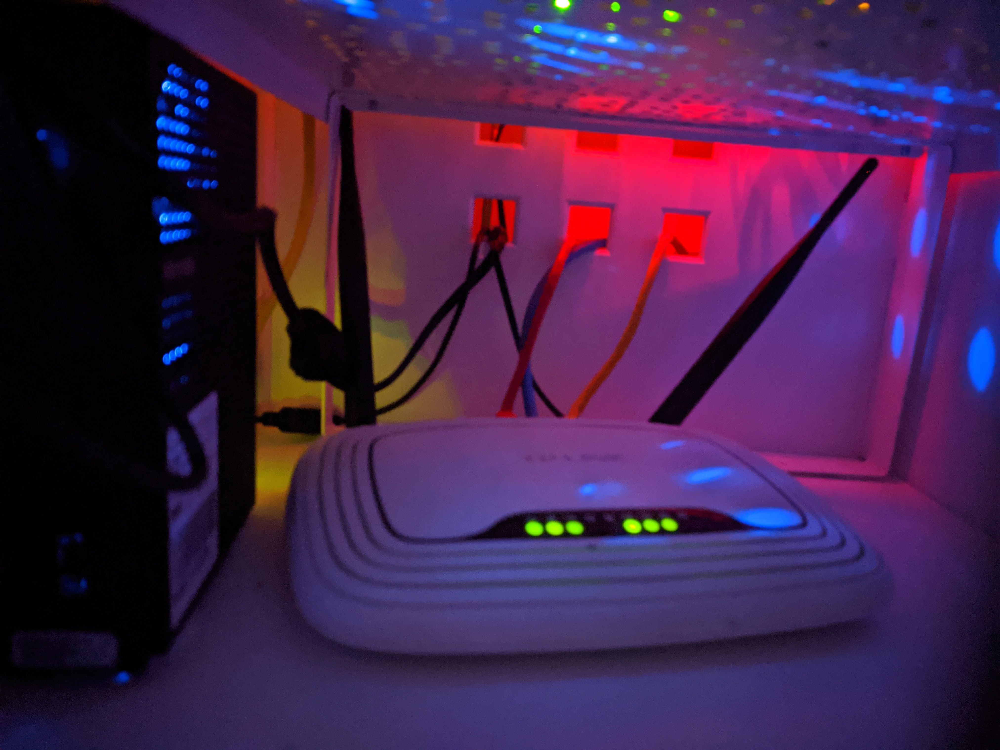